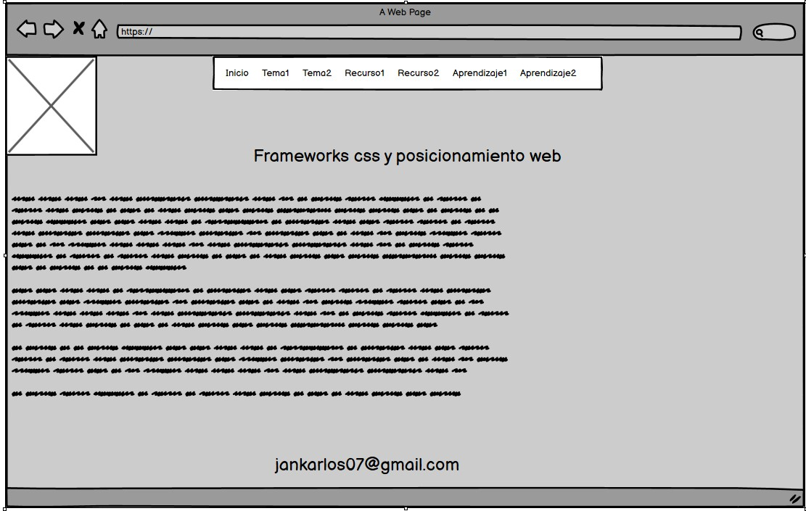

Frameworks css, posicimiento web
Frameworks de css es una biblioteca de estilos genérico que también puede ser usado para implementar diseños web .
Estás aportan una serie de utilidades que pueden ser aprovechadas frecuentemente en los distintos diseños de paginas
Los posicionamientos web también llamados posicionamientos en buscadores son utilizados para que resalten las páginas
de nuestra creación en los diferentes buscadores tales como google, Firefox y demás……
Celaya Luna, A. (2014). Creación de páginas web: HTML 5 (pág. 1 a 60). Recuperado de https://elibro-net.bibliotecavirtual.unad.edu.co/es/ereader/unad/56045
i Saltiveri, T. G. (2012). Diseño de sistemas interactivos centrados en el usuario. Editorial UOC. (Pág. 211 a 264). Recuperado de https://elibro-net.bibliotecavirtual.unad.edu.co/es/ereader/unad/56326?page=212
Ochoa Torres, J. (04,12,2018). O.V.I. SCV – Sistema Controlador de Versiones. [Archivo de Video]. Recuperado de http://hdl.handle.net/10596/22592
(teague, 2009)
